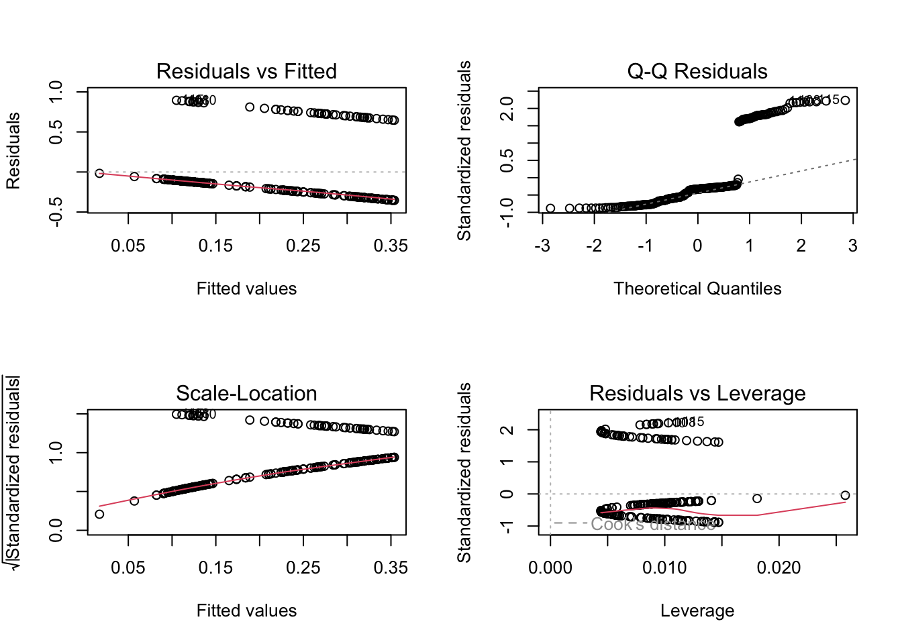
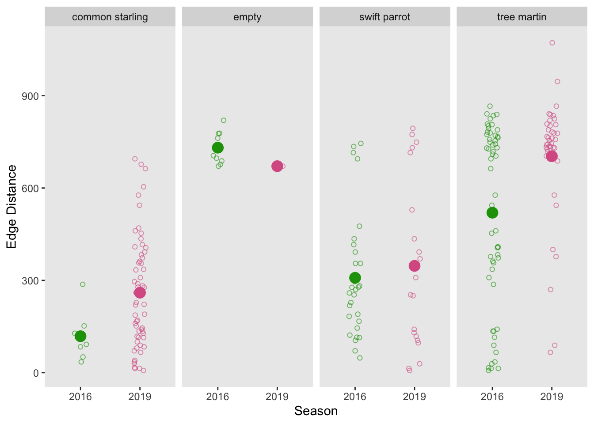

library(tidyverse)
library(janitor)
library(ggplot2)
library(here)
library(DHARMa)
library(ggeffects)
library(zoo)
library(MuMIn)
library(scales)
library(readxl)Final
https://github.com/misssammwoods04/ENVS-193DS_spring-2025_final
Problem 1
a.
In part one, one co-worker used a linear regression test. In part two, they used and analysis of variance test (ANOVA).
b.
The F distribution should be included to provide more context because it would help us determine significance, which helps us assess whether the observed differences are likely due to an actual relationship or random variation. since ANOVA only tells us that at least one group differs from the others, it would be important to conduct a post-hoc test (such as Tukey’s HSD) to identify which specific groups differ significantly from each other.
c.
We found a strong correlation between annual total nitrogen laod nitrogen load (kg/year) and distance from the headwater (km) (Linear regression, r value, F distribution, p = 0.03, \(\alpha\) = significance level)
Average nitrogen load (kg year⁻¹) differed significantly among nitrogen sources. Post-hoc testing confirmed significant differences between certain categories (One-way ANOVA, F distribution, Tukey HSD post-hoc test, p = 0.02, \(\alpha\) = significance level)
Problem 2
sst <- read.csv("SBH_temperature_20241231.csv")a.
sst_clean <- sst |> # data frame
clean_names() |> # clean names
mutate(month = factor(month.name[month], levels = month.name)) |>
select(year, month, surf_temp_c) |> # only show these three columns
filter (year %in% c(2018:2023)) |> # only show these years
group_by(year, month) |> # groups data by year and month
summarise(mean_monthly_sst = mean(surf_temp_c, na.rm = TRUE), .groups = "drop") |> # find mean sst of each month based on year
mutate(mean_monthly_sst = zoo::na.approx(mean_monthly_sst, na.rm = FALSE)) # change month number to name (abbreviate)sst_clean |>
slice_sample(n = 5) # Display 5 random rows from sst_clean# A tibble: 5 × 3
year month mean_monthly_sst
<int> <fct> <dbl>
1 2022 November 14.4
2 2018 October 18.9
3 2022 October 18.3
4 2023 November 16.7
5 2022 May 15.5str(sst_clean)# Show the structure of sst_cleantibble [72 × 3] (S3: tbl_df/tbl/data.frame)
$ year : int [1:72] 2018 2018 2018 2018 2018 2018 2018 2018 2018 2018 ...
$ month : Factor w/ 12 levels "January","February",..: 1 2 3 4 5 6 7 8 9 10 ...
$ mean_monthly_sst: num [1:72] 15.4 14.7 13.7 14.2 15.7 ...ggplot(sst_clean,
aes(x = month, # x axis
y = mean_monthly_sst, # y-axis
color = factor(year), # color based on year
group = year)) + # group based on year
geom_point() + # include points for each observation
geom_line() + # connect points
coord_cartesian(ylim = c(12, 20)) + # Zoom y-axis to 14-20, keep all data
scale_y_continuous(
breaks = seq(14, 20, by = 2), # determines range of y axis
labels = c (14, 16, 18, 20) # determines what shows up on y axis
) +
labs(x = "Month", # x axis name
y = "Mean monthly sea surface temperature (\u00B0C)", # y axis name
color = "Year") + # color based on year
theme_minimal() + # theme
theme(
panel.grid.major = element_blank(), # remove major grid lines
panel.grid.minor = element_blank() # remove minor grid lines
) +
theme(panel.border = # outline grid
element_rect(color = "black", # color outline in black
fill = NA, size = 0.5), # thickness of outline
axis.ticks.x = element_line(), # add x axis ticks
legend.position = c(0.1, 0.8)) # change legend positionProblem 3
nest_boxes <- read_csv("occdist.csv")
clean_nest_boxes <- nest_boxes |>
clean_names() |>
select(sp, edge_distance, season, box_occupant) |>
mutate(box_occupant = as_factor(box_occupant))a.
The 1s indicate the presence of something (yes) and the 0s indicate the absence of something (no).
b.
The main difference between Swift Parrots and the other two species is that Swift Parrots are the target species of the nest boxes while the other species are not.
c.
The two years are 2016 and 2019, and they differ based on the target and non-target species occupancy.
d.
| Model number | E_D | Season | Predictor list |
|---|---|---|---|
| 0 | no predictors (null model) | ||
| 1 | X | X | all predictors (full model) |
| 2 | X | ED | |
| 3 | X | season |
e.
model0 <- lm(
sp ~ 1,
data = clean_nest_boxes
)
model1 <- lm(
sp ~ edge_distance + season,
data = clean_nest_boxes
)
model2 <- lm(
sp ~ edge_distance ,
data = clean_nest_boxes
)
model3 <- lm(
sp ~ season ,
data = clean_nest_boxes
)f.
par(mfrow = c(2,2))
plot(model0)plot(model1)
plot(model2)
plot(model3)
g.
AICc(
model0,
model1,
model2,
model3
) |>
arrange(AICc) df AICc
model1 4 232.5485
model2 3 235.9030
model3 3 242.5425
model0 2 245.0324summary(model1)
Call:
lm(formula = sp ~ edge_distance + season, data = clean_nest_boxes)
Residuals:
Min 1Q Median 3Q Max
-0.42487 -0.25250 -0.17317 -0.03858 0.95492
Coefficients:
Estimate Std. Error t value Pr(>|t|)
(Intercept) 8.371e+01 3.580e+01 2.338 0.020269 *
edge_distance -3.251e-04 9.297e-05 -3.497 0.000567 ***
season -4.131e-02 1.774e-02 -2.328 0.020801 *
---
Signif. codes: 0 '***' 0.001 '**' 0.01 '*' 0.05 '.' 0.1 ' ' 1
Residual standard error: 0.3993 on 224 degrees of freedom
Multiple R-squared: 0.07056, Adjusted R-squared: 0.06226
F-statistic: 8.503 on 2 and 224 DF, p-value: 0.0002759The best model that explains total plant math includes edge distance and season (F(2,224 = 8.5, p < 0.001, \(\aplha\) = 0.05).
h.
model1_predictions <- ggpredict(
model1, # model object
terms = c("edge_distance", "season") # predictors
) |>
# treating this like a regular data frame
# renaming the columns
rename(edge_distance = x,
season = group)clean_nest_boxes$season <- factor(clean_nest_boxes$season, levels = c("2016", "2019")) # show seasons as separate data sets
model1_predictions$season <- factor(model1_predictions$season, levels = c("2016", "2019")) # show seasons as separate data sets
ggplot(data = clean_nest_boxes, # data set
aes(x = season, # x-axis = season
y = edge_distance, # y-axis = edge distance
color = season )) + # color based on season
#control jitter
geom_jitter(width = 0.1,
height = 0,
shape = 21,
alpha = 0.6) +
facet_wrap(~box_occupant, nrow = 1) + # makes each panel represent data fro the different species
labs(x = "Season", # change x-axis name
y = "Edge Distance") + # change y-axis name
scale_color_manual(values = c("2016" = "#1b9e07", "2019" = "#d95f92")) + # custom colors
stat_summary(geom = "point", # code a circle that represents the mean
fun = mean, # circle represents mean
size = 4) + # make circle larger than observations points
theme(legend.position = "none", # remove legend
panel.grid.major = element_blank(), # remove major grid lines
panel.grid.minor = element_blank() # remove minor grid lines
)
i.
Figure 1. Non target species (common starling, tree martin) tend to occupy nest boxes. Data from “occdist.csv” file (Stojanovic D, Owens G, Young C, Alves F, 2021). Points represent observations of nest box occupation by target and non target species (n=227). Colors represent nest box occupation based on season (2016 or 2019). Large, filled in circles reprsent the mean of each season of observations.
n_mod <- glm(sp ~ edge_distance, # creates model for linear regression
data = clean_nest_boxes, # data frame
family = "binomial") # identifies model a binomial
# Simulate and plot residuals
plot(
simulateResiduals(n_mod)
)
summary(n_mod) # gives summary of logistic regression model
Call:
glm(formula = sp ~ edge_distance, family = "binomial", data = clean_nest_boxes)
Coefficients:
Estimate Std. Error z value Pr(>|z|)
(Intercept) -0.506185 0.272676 -1.856 0.06340 .
edge_distance -0.001967 0.000611 -3.219 0.00129 **
---
Signif. codes: 0 '***' 0.001 '**' 0.01 '*' 0.05 '.' 0.1 ' ' 1
(Dispersion parameter for binomial family taken to be 1)
Null deviance: 236.81 on 226 degrees of freedom
Residual deviance: 225.62 on 225 degrees of freedom
AIC: 229.62
Number of Fisher Scoring iterations: 4gtsummary::tbl_regression(n_mod,
exponentiate = TRUE) # exponentiates logistic regression model Registered S3 methods overwritten by 'broom':
method from
nobs.fitdistr MuMIn
nobs.multinom MuMIn| Characteristic | OR | 95% CI | p-value |
|---|---|---|---|
| edge_distance | 1.00 | 1.00, 1.00 | 0.001 |
| Abbreviations: CI = Confidence Interval, OR = Odds Ratio | |||
exp(coef(n_mod)) # exact odds ratio for edge_distance (Intercept) edge_distance
0.6027911 0.9980349 ggpredict (n_mod,
terms = "edge_distance [0]") # gives predicted probability for edge distance = 0 # Predicted probabilities of sp
edge_distance | Predicted | 95% CI
--------------------------------------
0 | 0.38 | 0.26, 0.51ggpredict(n_mod,
terms = "edge_distance [300]") # gives predicted probability for edge distance = 300# Predicted probabilities of sp
edge_distance | Predicted | 95% CI
--------------------------------------
300 | 0.25 | 0.19, 0.32ggpredict(n_mod,
terms = "edge_distance [600]") # gives predicted probability for edge distance = 600# Predicted probabilities of sp
edge_distance | Predicted | 95% CI
--------------------------------------
600 | 0.16 | 0.11, 0.22ggpredict(n_mod,
terms = "edge_distance [900]") # gives predicted probability for edge distance = 900# Predicted probabilities of sp
edge_distance | Predicted | 95% CI
--------------------------------------
900 | 0.09 | 0.05, 0.18k.
With every 1 m increase in distance from the forest edge, the odds of a Swift Parrot occupying a nest box slightly decrease, although the effect is very small (odds ratio = 0.998, 95% CI [1.00, 1.00], p = 0.001, α = 0.05). While this odds ratio is very close to 1, the predicted probability of occupancy still decreases as distance increases.
This trend suggests that Swift Parrots are more likely to occupy nest boxes located closer to the forest edge. One possible biological explanation is that non-target species may dominate boxes farther from the edge, limiting Swift Parrot occupancy in those areas.
Problem 4
My homework 3 visualization is a lot more detailed and creative and includes all my predictor variables while my initial visualization shows only one predictor variable. Also, my initial visualization is more straightforward because it is a simple graph while my final visualization is more complex.
Between all visualizations I see a similarity in predictor variables as I kept the same predictors.
I don’t see many patterns throughout my visualizations, especially because my initial idea included on a graph and my final visualization was a lot more creative than I initially intended. At first, I was focused on making a straight forward, logical visualization, but as I realized that I could show my data however I wanted, I leaned towards a more creative vision.
The main feedback I received was that there was not much indication of a correlation between my predictor and response variables. I knew that there was not a correlation between my variables, but I decided to show this by running a logisitic regression on my website. This test confirmed my assumption that there was no correlation between my predictors and response variables.